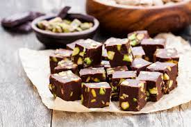

...Cikolata Kupleri...
Cikolata ve sam fistikli tadımlık lezzetler... Yalnizca 4 malzeme hazirlanan cikolata kupleri,renkli kagitlarda veya kurdan batirilarak servis edilir. Ozellikle kalabalik sofralarda yer verilen cikolata kupleri dogum gunu gibi özel etkinliklerde de sunulabilir
Tarif:
Kadir Arslan

Kac kisilik: 4 kisilik
Hazirlama suresi: 30 dakika
Pisirme Suresi: 10 dakika
Cikolata Kupleri Tarifi Icin
Malzemeler...
- 350 gr bitter cikolata
- 150 ml krema
- 1 corba kasigi tereyagi
- 150 gr samfistik (badem veya findikta olabilir)
Cikolata Kupleri Nasil
Yapilir
- Bitter cikolatayi benmari usulu eritin
- Eriyen cikolatanin uzerine krema ve tereyagi ekleyin.
- Samfistiklari havanda cok az dovup irili ufakli parcalara bolun.
- Ufalanan fistiklari cikolatali karisima ekleyip karistirin.
- Hazirladiginiz cikolayi varsa aluminyum hazir bir kare tepsiye, yoksa kenarlarindan tasarak yagli kagit yerlestirdiginiz kucuk bir tepsiye dokun.
- Buzdolabinda iki saat bekletin.
- Cikolatayi kaliptan cikartin. Kare parcalara bolun.
Afiyet Olsun